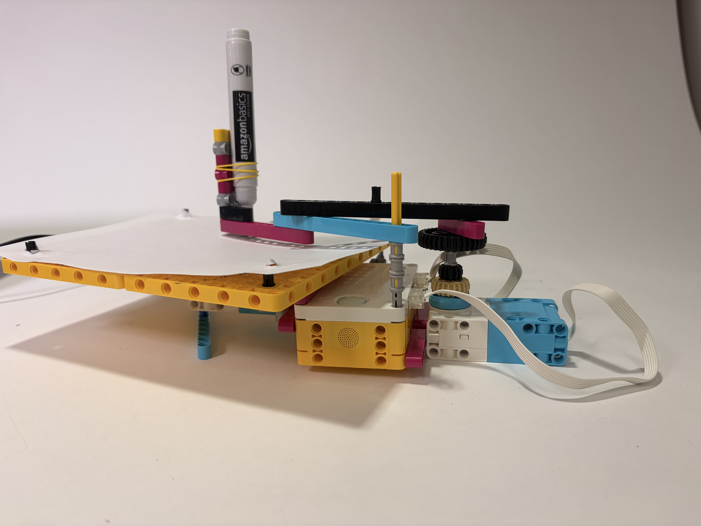
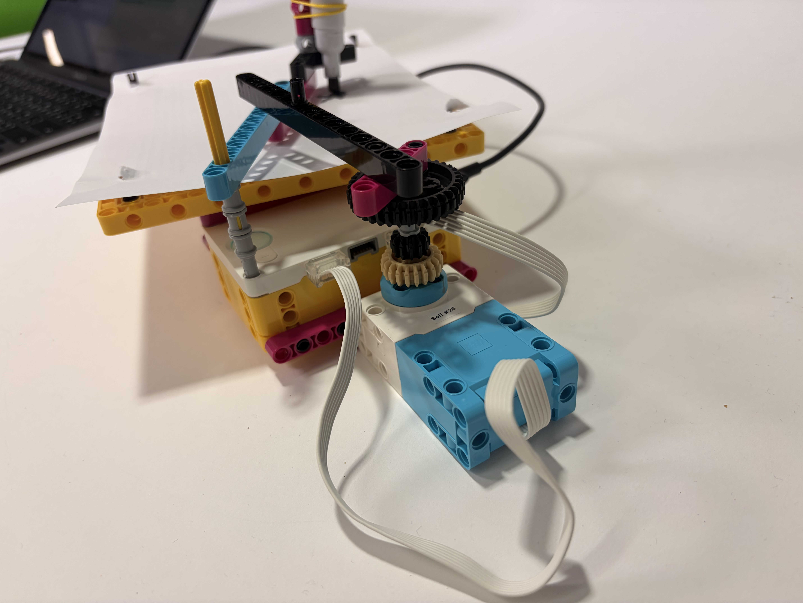
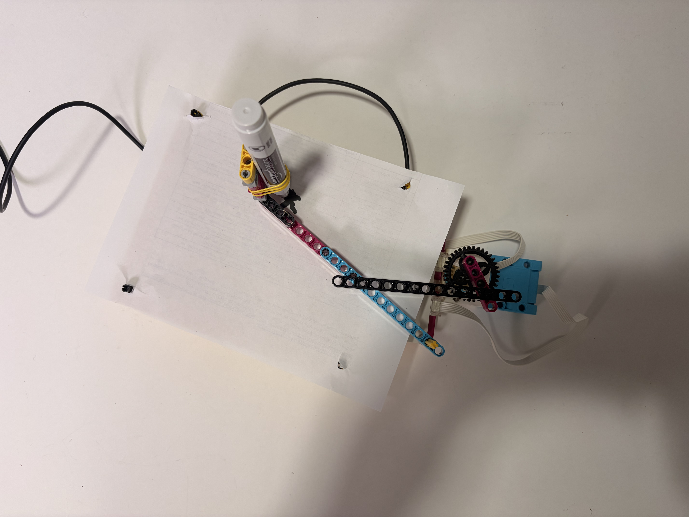
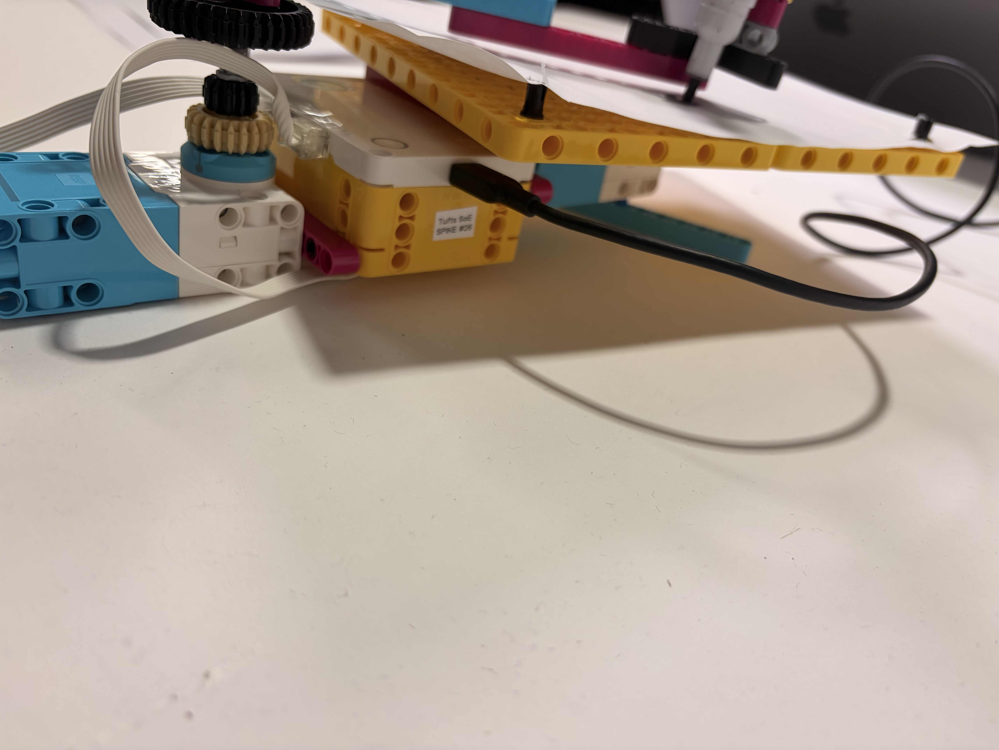
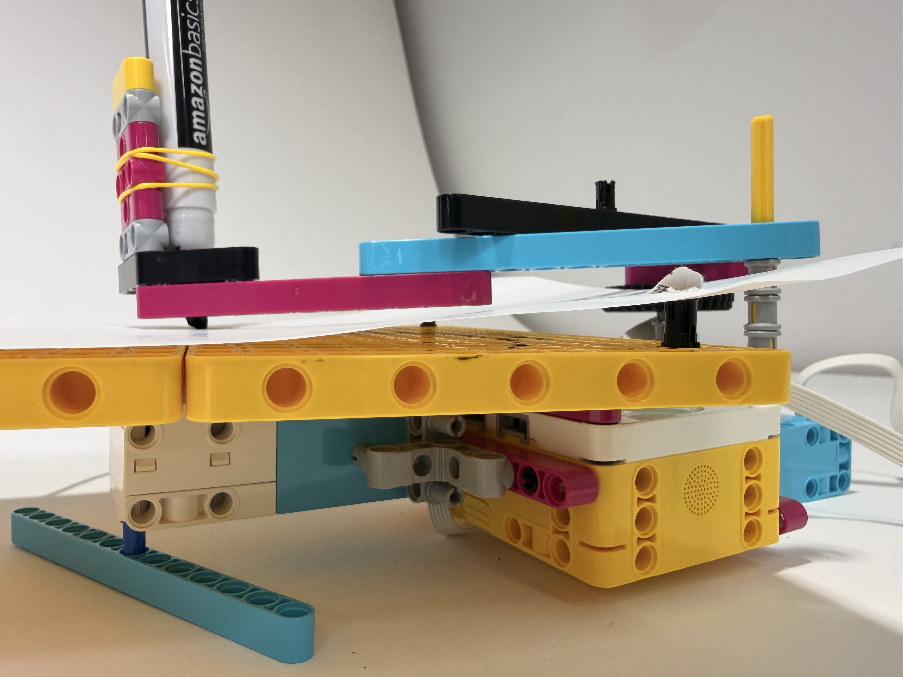
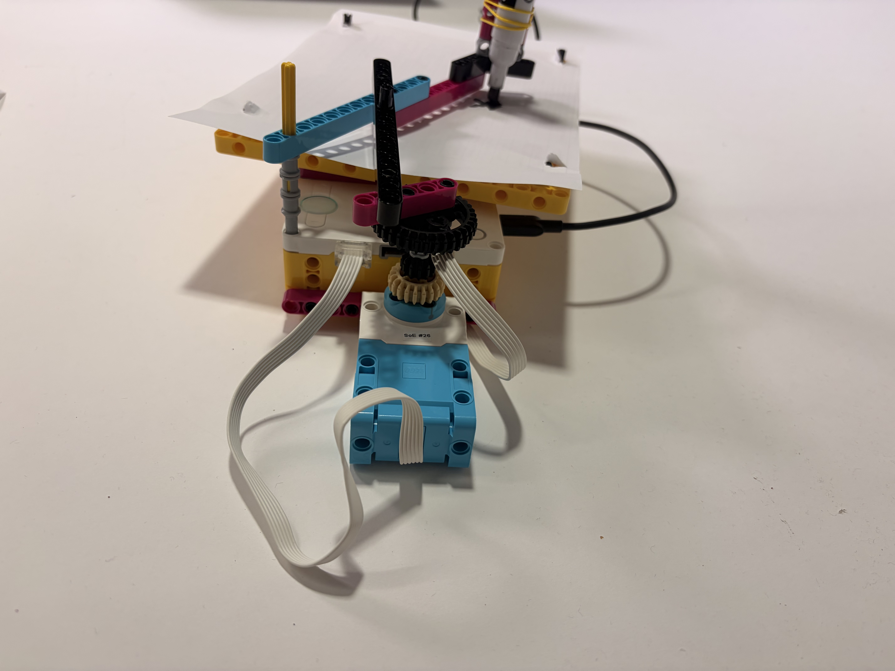
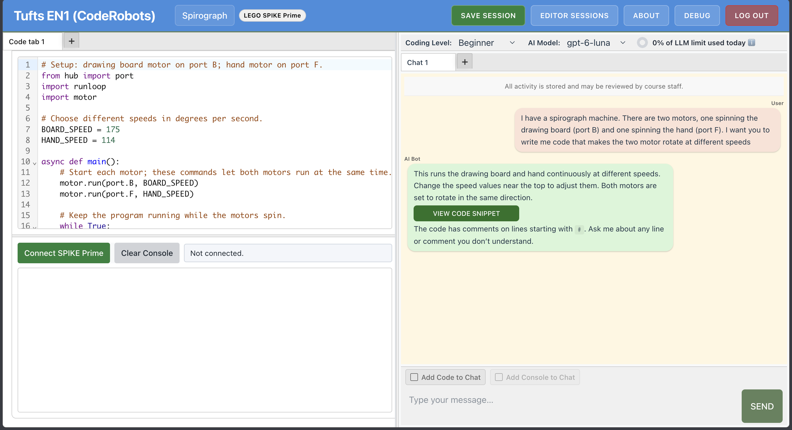

Objective: Create a spirograph machine with LEGO, and use Generative AI to code the machine's motors to run at different speeds to create a unique pattern.
The hardest part was building the machine itself. Determining the length of the arm was challenging, and so was figuring out how to set up the platform so the drawing could cover the entire sheet of paper. Stability was another issue: the pen did not have enough pressure on the paper to make clean drawings, so I built a platform underneath to support it. For the arm, I kept tweaking the components, learning from my mistakes and slowly adjusting until it was complete.





I used Generative AI to write the code. One motor spins the drawing board (port B) and the other spins the arm (port F), each at a different speed.
